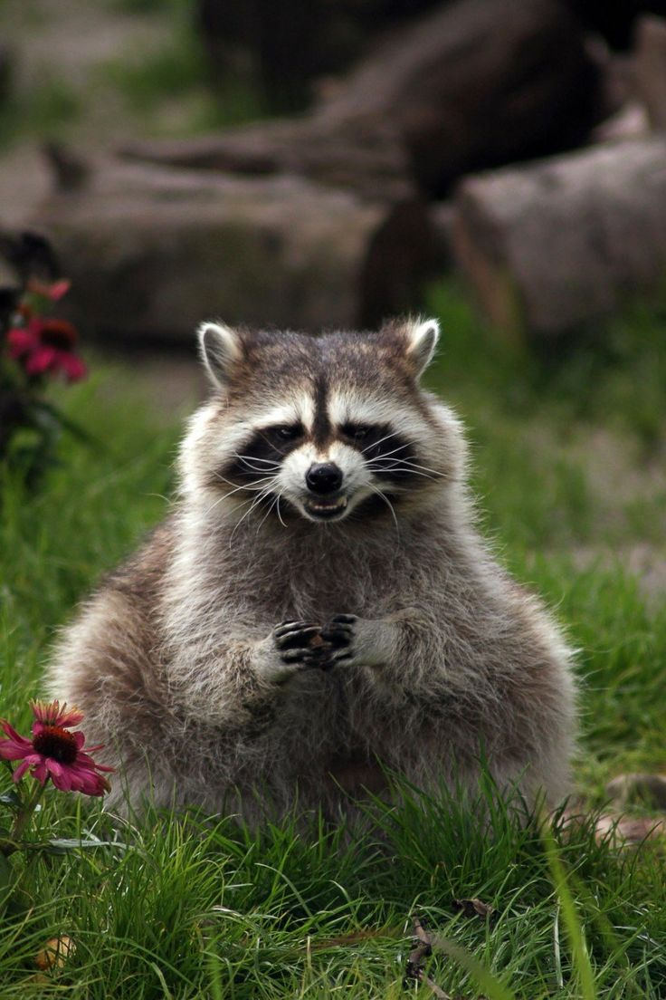

Цікаві факти:
- Єноти мають дуже спритні лапи — вони можуть відкривати банки, двері і навіть холодильники.
- Їхня "маска" навколо очей допомагає зменшити відблиски та покращити зір у темряві.
- Єноти — всеїдні. Вони можуть їсти фрукти, горіхи, яйця, рибу, комах і навіть залишки їжі людини.
Де живуть?
Єноти зустрічаються по всій Північній Америці, а також у деяких частинах Європи та Японії, куди їх завезли.
Поведінка
Єноти ведуть нічний спосіб життя — вони активні вночі, а вдень зазвичай ховаються у дуплах дерев або норах. Вони дуже обережні, але водночас надзвичайно цікаві. Часто їх можна побачити біля людських помешкань у пошуках їжі.